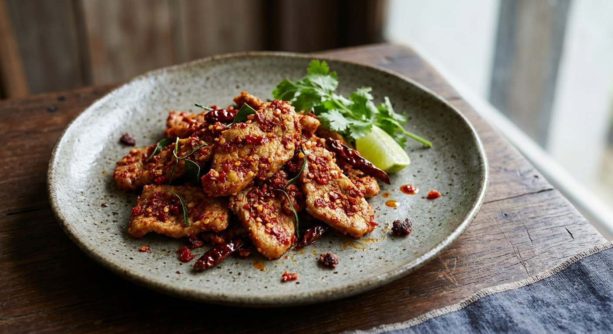

Meat fried hard with pounded fresh chillies and garlic — dry, sharp and aggressively simple. The chilli is the point; everything else stays out of the way.

Pad prik is the plainest name in Thai cooking — "stir-fried chillies" — and the dish is exactly that. No curry paste, no basil, no sweetness to hide behind: fresh chillies pounded with garlic, fried until the oil turns red, then meat tossed through until dry and clinging. It sits next to pad krapow on every rice-shop menu, and it is the one Thai cooks order when they actually want to taste the chilli rather than the aromatics.
Confusingly for UK menus, the same two words cover a whole family: the fiery dry version with pounded bird's-eye chillies, the gentler one with sliced spur chillies, and the very mild one made with big banana peppers (prik yuak) in an oyster-sauce glaze. The recipe below gives the classic chilli-forward version, then explains the variants — because the dish you are served depends entirely on which chillies the kitchen used.
| Thai | English | Amount |
|---|---|---|
| หมู / ไก่ | Pork loin, chicken thigh or minced pork, sliced or minced | 300–500 g |
| พริกขี้หนูแดง | Red bird's-eye chillies (or spur chillies for a milder version) | 10–20 (heat to taste) |
| พริกชี้ฟ้าแดง | Red spur chillies, for colour and gentle heat | 2–5 |
| กระเทียม | Garlic cloves | 1 tbsp pounded / 4 cloves |
| น้ำมันพืช | Vegetable oil | 2–3 tbsp |
| น้ำปลา | Fish sauce | 1–2 tbsp |
| น้ำตาลปี๊บ / น้ำตาล | Palm sugar or white sugar | ½ tbsp / 1 tsp |
| ใบมะกรูด | Kaffir lime leaves, torn (optional) | 5–10 leaves |
| น้ำมันหอย | Oyster sauce (only for the saucy variant) | 1–3 tbsp |
The three faces of pad prik: (1) dry and fiery — bird's-eye chillies pounded with garlic, seasoned with just fish sauce and sugar, no oyster sauce (Cookpad's gai pad prik, Wongnai's moo sup pad prik kee noo); (2) glossy and mild — sliced spur chillies with 2–3 tbsp oyster sauce and a splash of dark soy (Wongnai Nickktwf); (3) banana-pepper version — prik yuak with onion in a light oyster glaze, barely spicy at all (Kapook).
Which chilli? This is the whole identity of the dish. Cookpad's chicken version uses 19 pounded bird's-eye chillies and 5 spur chillies — properly hot. Wongnai's minced-pork version goes even harder: 300 g chillies to 500 g pork. But Kapook's "moo pad prik" uses banana peppers and onion in an oyster glaze — barely spicy. UK restaurants nearly always serve the mild spur-chilli or banana-pepper version.
Oyster sauce: yes or no? The fiery versions use none — just fish sauce, sugar, sometimes salt (Cookpad-gai). The mild versions lean on oyster sauce heavily, up to 3 tbsp (Wongnai Nickktwf). The further from fresh chillies the dish gets, the more Chinese-style seasoning creeps in.
Minced or sliced? Minced pork dry-fried until the paste coats every grain (Wongnai) versus sliced pork or chicken kept in bigger pieces (Cookpad, Kapook). Rice shops do the minced version; restaurants do sliced.
Kaffir lime leaves? Only Cookpad's gai pad prik adds torn kaffir lime leaves at the end. Most recipes skip them — the chilli and garlic are meant to carry the dish alone.
Dry or saucy? The classic finish is dry — the paste clinging to the meat. The banana-pepper versions add water and end glossy and looser. Both are called pad prik, which is why the menu name tells you nothing about heat.
This recipe is translated from the following Thai-language sources. Where they disagree, we've said so.